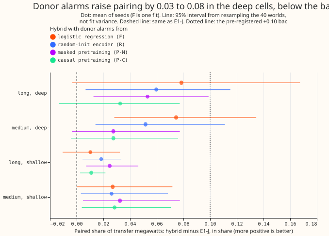

Does feeding a probe's donor alarms into the recipient search of experiment 670 pair more injected load-transfer megawatts than the event table alone?
Feeding the donor alarms of a probe into E1-J's recipient search pairs a little more of the transfer megawatts, but less than the predicted +0.10, so the graph line is closed at 15 Primaries. Experiment 678 tests whether the donor alarms of the probes of experiment 675 raise the pairing of the event table, on experiment 660's generator unchanged. It continues the graph line that experiment 672 closed under its stop rule and that the maintainer asked to reopen. The hybrid with the logistic regression's alarms (F-hyb) pairs 0.36 of the long and deep megawatts against 0.29 for E1-J (difference +0.08, 95% interval -0.00 to +0.17), and 0.32 against 0.25 in the medium and deep cell (+0.08, +0.03 to +0.13). The verdict is not supported: no hybrid reaches +0.10 in either deep cell.
Terms
- F-hyb, R-hyb, P-M-hyb, P-C-hyb. E1's event table plus one added downward donor event per alarm of the probe named, searched for recipients by experiment 670's search. The probes are experiment 675's: a logistic regression on the node inputs (F), a randomly initialised encoder (R), and encoders pretrained by masked reconstruction (P-M) and by causal prediction (P-C).
- Primary, E1, arm C, noise unit. A Primary is a primary substation. E1 is the event table of experiment 653, which segments each Primary's residual into steps. Arm C is the demand forecast of experiment 327 whose residual E1 reads, and a noise unit is the block-difference noise of a Primary's residual in megawatts. The 15 Primaries and 40 scored worlds are those of experiment
- The probes read a per-Primary, per-hour vector of 35 inputs (the residual, step statistics, and calendar terms).
- Rewired placebo. The same hybrid on a degree-preserving rewired graph, with the draw out of 30 that keeps the fewest real links.
- Cell, paired, found, E1-J. As in experiment 672. Paired is the MW-weighted share of injected edge-transfer ends whose decoded event has the right partner.
Figures
The figure shows point estimates 0.03 to 0.08 above E1-J in the long and deep and the medium and deep cells, with the intervals of four of the eight deep-cell hybrids reaching zero, and all below the +0.10 bar. The logistic regression's lead over the random-init encoder is within the seed spread of the encoder.

Results
-
Paired share per cell, MW-weighted, with 95% intervals from resampling the 40 worlds (hybrids are means over 3 seeds, except F-hyb, which has one fit):
Cell E1-J F-hyb R-hyb P-M-hyb P-C-hyb F-hyb rewired Long, deep 0.29 (0.19 to 0.41) 0.36 (0.26 to 0.48) 0.35 (0.25 to 0.47) 0.34 (0.24 to 0.46) 0.32 (0.23 to 0.44) 0.04 Medium, deep 0.25 (0.13 to 0.38) 0.32 (0.20 to 0.46) 0.30 (0.18 to 0.44) 0.27 (0.16 to 0.42) 0.27 (0.16 to 0.42) 0.06 Long, shallow 0.19 (0.14 to 0.24) 0.20 (0.15 to 0.25) 0.21 (0.16 to 0.26) 0.21 (0.16 to 0.27) 0.20 (0.15 to 0.25) 0.03 Medium, shallow 0.13 (0.09 to 0.18) 0.16 (0.10 to 0.22) 0.16 (0.11 to 0.22) 0.16 (0.11 to 0.23) 0.16 (0.11 to 0.22) 0.01 Short, deep 0.08 0.08 0.08 0.08 0.08 0.00 Short, shallow 0.03 0.03 0.03 0.03 0.03 0.00 -
Differences from E1-J, with 95% intervals. Long and deep: F-hyb +0.08 (-0.00 to +0.17), R-hyb +0.06 (+0.01 to +0.12), P-M-hyb +0.05 (+0.01 to +0.10), P-C-hyb +0.03 (-0.01 to +0.08). Medium and deep: +0.08 (+0.03 to +0.13), +0.05 (+0.01 to +0.11), +0.03 (-0.00 to +0.08), and +0.03 (-0.00 to +0.08). Long and shallow: +0.01, +0.02, +0.03, and +0.01. Medium and shallow: +0.03 in every hybrid.
- Donor megawatts found. Long and deep: E1-J 0.44, F-hyb 0.52, R-hyb 0.49, P-M-hyb 0.50, P-C-hyb 0.49; medium and deep: 0.40, 0.45, 0.44, 0.42, and 0.41. Only 35 and 36 of the 40 worlds hold an edge-transfer end in the long and deep and the medium and deep cells (146 and 103 ends).
- Short cells. The hybrids equal E1-J exactly, because the added donor's end is searched from 2 days after its start, so a donor shorter than 2 days gets a late end or none and cannot match.
- Seeds. R-hyb's three seeds pair 0.37, 0.36, and 0.31 in the long and deep cell, and 0.31, 0.30, and 0.29 in the medium and deep cell, so every seed is below the +0.10 bar.
- Placebo. On the rewired graph F-hyb pairs 0.04 and 0.06 in the two deep cells and R-hyb 0.05 and 0.06, (E1-J rewired: 0.04 and 0.06). The recipient search reads only the neighbours it is given, so this shows that it needs the real graph, not that the encoder is idle. The empty graph pairs 0 by construction and was not scored.
- Decoded transfer events that are not a correct pair, per Primary-year (an upper bound on false transfers; it includes wrong-partner and duplicate events): E1-J 0.38; F-hyb 0.51; R-hyb 0.54 (0.41 to 0.62 over seeds); P-M-hyb 0.58; P-C-hyb 0.46.
Predictions
- P1 (F-hyb or R-hyb at least +0.10 in both deep cells): failed. F-hyb +0.08 and +0.08, R-hyb +0.06 and +0.05.
- P2 (R-hyb at least +0.10): failed, as above.
- P3 (F-hyb at least +0.05 in the long and shallow cell and +0.03 in the medium and shallow cell): failed (+0.01 and +0.03; the second is +0.027, short of +0.03).
- P4 (false transfers at most 1.5 times E1-J's, 0.57): held for F-hyb (0.51), R-hyb (0.54), and P-C-hyb (0.46), and failed for P-M-hyb (0.58). Seeds range from 0.41 to 0.62 for R-hyb and 0.55 to 0.61 for P-M-hyb, so "held" rests on the mean.
- P5 (the rewired placebo pairs at most a third of its hybrid in the deep cells): held (0.04 against 0.36, and 0.06 against 0.32).
- Adoption bar (0.60 in both deep cells): not reached. The best hybrid pairs 0.36 and 0.32.
- Reading of the verdict. The pre-registered +0.10 bar is missed on the point estimates, and F-hyb's upper interval limits (+0.17 and +0.13) do not rule it out.
- Stop rule fires. No hybrid reaches +0.10 in either deep cell, so the graph line is closed at 15 Primaries and the edge-state network is not built.
Checks
- Code review. A fresh Sonnet reviewer found no use of injected truth in the donor construction. Before any score was read, the plan and code were changed on its findings: the start-search window now matches the window in which experiment 675 credits an alarm (24 hours before to 12 hours after), an alarm near any E1 downward event of 4 noise units or more is skipped whether or not E1 paired it, a donor counts as permanent at 180 or more days of record left (experiment 653's rule), and donors added by earlier alarms count for the near-duplicate rule.
- Known biases. The alarm thresholds are calibrated on the scored worlds with truth (above). The added donor's end is late by up to about 12 hours and is searched from 2 days after the start. Donor-found and false-transfer counts include added donors under 4 noise units, which the search ignores but the scoring can match. The real-graph hybrid and its rewired placebo have different added-donor lists, because E1's pairing differs on the two graphs. The donor start and end of each alarm were not scored separately. A post hoc rule for short events was not tried.
- Audit. A fresh Sonnet reviewer re-derived the paired shares of E1-J, F-hyb, and R-hyb in the two deep cells and the false-transfer rates from the scored rows with its own code, found the bootstrap consistent across arms, and found no injected truth in the donor construction, apart from the alarm thresholds, which experiment 675 set on these 40 worlds so that each probe's false-donor rate equals E1-J's. The comparison is therefore at a matched alarm rate, not at a threshold that could be deployed.
- Caveats. F-hyb is one fit, and the intervals resample worlds only, not fit variance. NGED's logs may miss load shifts, so matched logged shifts on the real record are lower bounds, and the injected start hours come from NGED's logged onsets up to 2026-07, as in experiments 670, 672, and 675. The probes are experiment 675's, trained on 200 worlds.
What to try next
- The pre-registered stop rule closes the graph line at 15 Primaries. A donor probe is worth testing again only with a donor end that can be shorter than 2 days, and on the fleet-scale adjacency of about 1,161 Primaries; both are for the roadmap to decide.
The plan as committed
The plan below was committed before any score was read. The code review changed it once, before any score was read, as the Checks section lists.
This is the plan, committed before any score is read. It continues the graph line that experiment 675 reopened, and which experiment 672 had closed under its stop rule. Experiment 675 found that masked pretraining did not help, and that neither did causal pretraining as designed (the causal arm finds 0.26 and 0.20 fewer donor megawatts than the random-init encoder in the two deep cells). The graph Discuss session therefore asked for the cheapest test of the finding that matters: a donor probe finds more long and deep donor megawatts than E1-J, so does that gain turn into more pairs?
The question
Experiment 675's step 0a showed that the donor, not the link to the recipient, is where E1-J loses the megawatts it finds at the recipient. The no-encoder logistic regression (F) found 0.63 of long and deep donor megawatts against E1-J's 0.44 (one fit, no interval for E1-J), and the random-init encoder (R) found 0.59 (seeds 0.46 to 0.70). The question here is whether adding those donors to E1-J's search lifts the paired share. F is the non-neural baseline that any neural donor head has to beat, so it is run beside R.
Method
- Probe scores. Experiment 675's stored probe scores for the 40 scored worlds: F (1 fit) and R, P-M, and P-C (3 seeds each). No probe is retrained, and no GPU time is used.
- From an alarm to a donor event. Each alarm becomes a downward donor event whose start and end
are measured on the arm-C residual by the rule in the decision rule above, with the size from
experiment 670's
step_size. An alarm near any E1 downward event of 4 noise units or more, or near an earlier added donor, adds nothing. - Recipient search. Experiment 670's
search_recipients, unchanged, on E1's events plus the added donors, on the real graph. Placebos: the degree-preserving rewired graph of experiment 670 (rewire_low_overlap, the draw keeping the fewest real links, with the share kept reported) and an empty graph. - Scoring. Experiment 653's
matchand experiment 665's cell statistics, as in experiment 670, with world-resampled intervals. Decoded transfers matching no injected end are counted per Primary-year. - Reviews and running. A fresh Sonnet code review before the first run (checking that no
injected truth enters the donor construction and that the probe scores are the stored ones), a
results audit, a write-up review, and a prose review. CPU work runs under
systemd-run --user --scope -p MemoryMax=16G -p OOMPolicy=continue. - Inherited caveats. NGED's logs may miss load shifts, so matched logged shifts on the real record are lower bounds, and the injected start hours come from NGED's logged onsets up to 2026-07, as in experiments 670, 672, and 675.